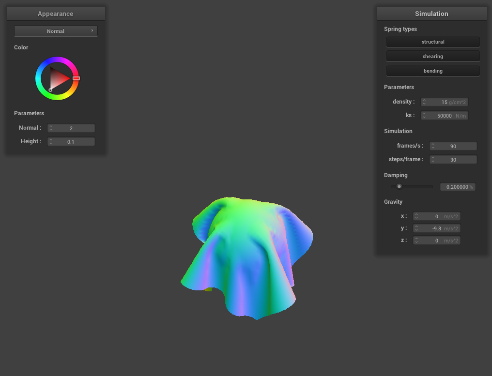
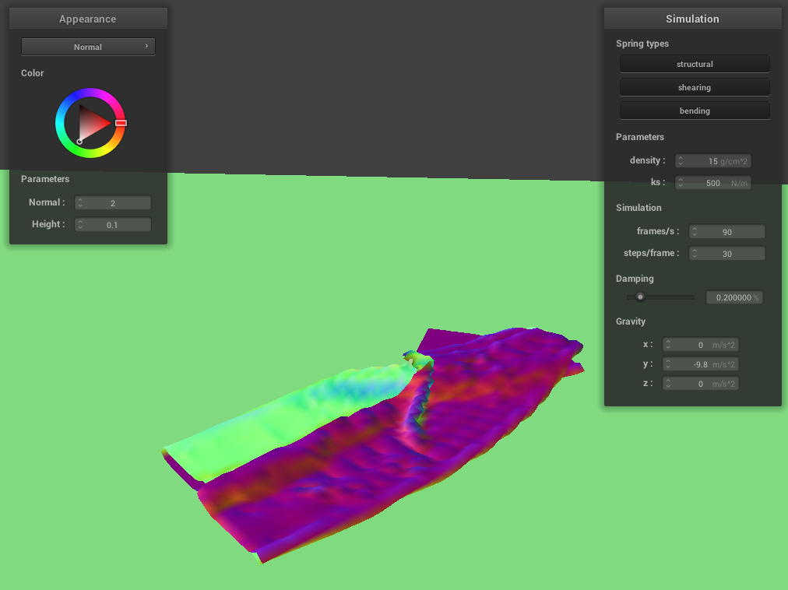

CS184/284A Spring 2025 Homework 4 Write-Up
Names: Justin Xue
Link to webpage:
https://cal-cs184-student.github.io/hw-webpages-blahblahbl/
Link to GitHub repository:
https://github.com/cal-cs184-student/sp25-hw4-joosy4
Overview
A high level overview of the project is first we implemented the basic cloth creating a mesh from springs and point masses.
We then implemented basic physics to make the cloth move through gravity and other forces. Then we started implementing collision,
which allowed this cloth to interact with other primitives like spheres and planes and finally itself. Essentially creating a realistic cloth physics.
Finally we implemented shading, which we added various shading techniques like blinn phong, diffuse, and textures as well, and bumps and displacements.
Overall it was very interesting learning the hash method for self collision which is relatively simple but saves so much time. It makes me think of the
BVH model and how relatively simple changes can speed things up drastically. I also was surprised how easy it was to implement the texture, all you need was to sample the texture at a point and that's it.
Part 1: Masses and springs
|
Strucure
|
Only Shearing Constraint
|
|
Without Any Shearing Constraint
|
With All Constraints
|
Part 2: Simulation via numerical integration
KS
A high KS results in an extremely inelastic cloth while a low KS results
in a very stretchy cloth in regards to the pinned points its apparent. As
you can see in the images KS the pinned points droop the elastic alot
while with a very high KS its pretty much just a square sheet.
Density
A high density results in a very heavy cloth while a low density results
in a very light cloth. This is shown when with low density the cloth is
pretty much a square because there's little force pulling down (gravity).
Meanwhile with a high density the cloth stretches down a lot because
there's a lot of force pulling down as F = ma.
Damping
A high damping results in a very slow moving cloth when falling, while a
low damping results in a very fast moving and jiggly cloth. This is
because damping basically limits velocity. This is kinda hard to show in a
screenshot but basically the high damping is very rigid while low is very
loose.
Normal Cloth with Color
Part 3: Handling collisions with other objects
My implementation of collision with spheres is basically to check if it's
inside the sphere, I find the distance from the point to the center and if
it's less than radius I know its inside. Then if inside to calculate the
"collision" point, I take this unit vector of direction origin -> point,
and multiply by radius and add it to origin. Finally I just follow the
steps highlighted. For collision with planes, I used the plane
intersection equation to find a timestep t for a ray with origin
pm.last_position and pointing to pm.position (direction = pm.position -
pm.last_position).. If t was between 0 and 1, I know the ray intersected
the plane and just found the collision point by adding pm.last_position
with this t and direction. Finally just followed steps highlighted in the
part and added SURFACE_OFFSET to the correction.
 500 KS
500 KS
|
5000 KS
|
|

50000 KS
|
Plane
|
KS is basically how stretchy the cloth is, so the lowest KS, gravity pulls
it down to the lowest point resulting in it looking the droopiest, and the
highest KS basically the cloth is pretty rigid and doesn't droop that
much. The middle is obviously in the middle droopiness between the two.
Part 4: Handling self-collisions
For hashing, I basically calculated the dimensions of the 3d hash boxes,
then floor divided to find which one it fit into. I then found a hash
formula online which generated unique hashes from three numbers which I
used to find the hash. Populating the hash map was just generating hash
then creating a list of point masses. Finally for self collision, I
checked the distance between the point masses. If it was less than 2 *
thickness, I calculated the distance needed to add it to make the distance
2 * thickness. I summed all these up, calculated average using a count,
then divided by simulation steps and offset accordingly. Finally I just
added to simulation by iterating through all the point masses.
|
Initial Drop
|
After ~3 seconds
|
 After ~10 seconds
After ~10 seconds
|
Varying KS and Density
Increasing density basically made the cloth more heavy and land on itself
more which explains the more wrinkly appearance. Meanwhile a low density
makes it light and not really wrinkle. Similarly increasing ks made less
stretchy which in turn makes it so it didn't really crumple on itself.
Meanwhile decreasing ks made it more so it super wrinkled around itself.
|
Low Density Drop
|
High Density Drop
|
|

Low KS Drop
|
High KS Drop
|
Part 5: Shaders
A shader program basically a program that runs on the GPU and defines how
pixels / vertices are rendered. This can be used to create various effects
like textures, colors, mirroring etc... A vertex shader processes
individual vertices and converts vertexes from object space to world
space. A fragment shader processes individual fragments (the outputs) and
computes the color from these various variables.
The Blinn Phong shading model is composed of three parts. Ambient lighting
which is basically not based on physics but is just indirect light
scattered from the environment. This is just based on two constants and
doesn't depend on anything else. Then there's diffuse shading. This is
basically the light that reflects equally in all directions. Finally
there's specular shading which is the super shiny spots that reflect
almost mirror like direct.
|
Ambient
|
Diffuse
|
|
Specular
|
All
|
|
Bump
|
Diffuse
|
|
Bump 128 x 128
|
 Displace 128 x 128
Displace 128 x 128
|
|
Bump 16 x 16
|
Displace 16 x 16
|
The difference between bump and displacement is that
bump does not affect the actual geometry. Instead it changes the normals,
which the light reacts with to create the illusion of "bumps". On the other hand,
displacement actually changes the geomtry as we change the position of the vertices.
This obviously makes it look like there's bumps because there are. If you look closely at the images,
you can see the bump is still smooth even though it looks like there's bumps, while the displacement,
there's actually height differences. For the 128x128 vs 16x16, the difference is the clarity of the texture,
with the texture being applied more smoothly in the 128x128.